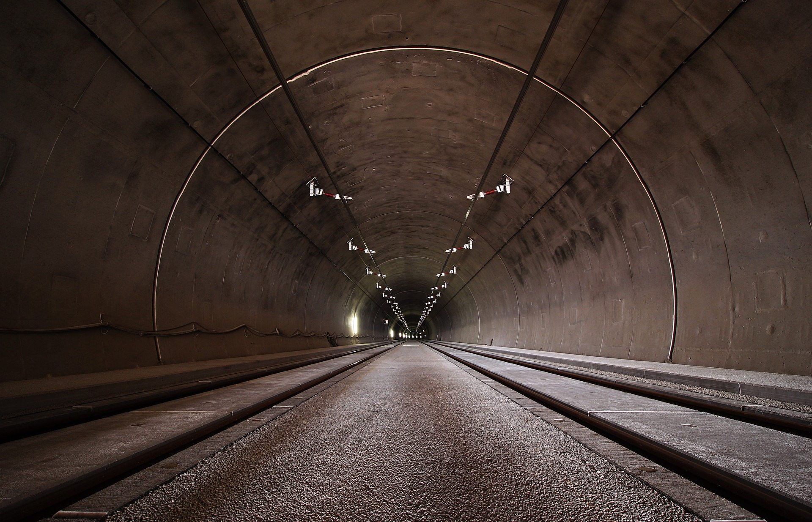

POURQUOI VOYAGER ?
Un voyage, c’est l’occasion de se challenger, de se lancer des défis,
de s’imposer des difficultés. C’est aussi l’occasion de se confronter
à ses peurs ; La peur d’être seul, la peur des inconnus…
Il n’y a rien de plus jouissif que de pouvoir vivre cette impression de
liberté, de pouvoir faire ce qu’on veut quand on veut, libéré des
contraintes du quotidien, libre de pouvoir enfin prendre son temps et
vivre à son rythme
"VIVRE , C EST VOYAGER "
MONUM est site qui vous permet de trouver l endroit a visiter pour changer d air